Color Schemes
| Author: | Mitch Richling |
| Updated: | 2022-08-04 16:34:02 |
| Generated: | 2022-08-04 16:34:02 |
Copyright © 2022 Mitch Richling. All rights reserved.
Table of Contents
- 1. Introduction
- 2. Color Cube Edge/Diagonal Graph Color Schemes
- 2.1. Maximal circuits in the cube edge graph
- 2.2. Maximal circuits in the cube edge/diagonal graph
- 2.3. Hitting all the corners
- 2.4. Large Trees
- 2.5. Black to White Trees
- 2.6. Luminance based color schemes
- 2.7. Hot Too Cold
- 2.8. Constant Intensity Cycles
- 2.9. One Segment Diverging Maps
- 2.10. Three Segment Diverging Maps
- 2.11. Center point ramps (HSL schemes)
- 2.12. Stacked HSL Schemes
- 3. Continuous Polynomial Schemes
- 4. Dav Green's cubehelix color maps
- 5. Pseudo-Greyscale
- 6. Spectral
- 7. Color Brewer
1. Introduction
MRaster provides access to a rich collection of color schemes. Color schemes are exposed in the API as inner classes of the colorTpl class. These
inner classes follow a regular naming convention:
csCB ..........RGB Color Brewer 2 (template:csCB_tplcsFPwebSafe ...RGB Web safe colors (template:csFP_tplcsCCdiag ......RGB color cube: diagonal gradients (template:csCC_tpl)csCCcons ......RGB color cube: Gradients with constant brightness (template:csCC_tpl)csCColde ......RGB color cube: Some classic color gradients (template:csCC_tpl)csCCud ........RGB color cube: Two color up-down ramps (template:csCC_tpl)csCCSum .......RGB color cube: Sum ramp (template:csCC_tpl)csHSLh ........RGB color cube: Gradients starting at the center of the cube and extending to a cornercsBin .........RGB Binary Schemes (template:csCC_tpl)csPGrey .......RGB Pseudo-greyscalecsRainbow .....RGB spectrum based colorscsCH ..........RGB Cubehelix colors (template: csCubeHelix_tpl)
These classes are static in nature, and an instance is not required to use them. They all have a member named "c" which is used to set the components of a
colorTpl instance passed as argument, or as a factory for colorTpl instances.
When used as a factory, color scheme classes return fully constructed colorTpl objects:
mjr:color3c8b aColor = mjr::color3c8b::webSafeNormalVision.c(25);
Alternately, color scheme classes may set the components of a passed colorTpl instance:
mjr::color3c8b aColor; mjr::color3c8b::webSafeNormalVision.c(aColor, 25);
Color scheme classes may also be used by colorTpl methods to identify a color scheme. For example, the csSet method can set the current object's
components based on a color scheme like so:
mjr::color3c8b aColor; aColor.csSet<mjr::color3c8b::webSafeNormalVision>(25);
1.1. Color Scheme Class Interface
Not all color scheme classes have the same interface; however, the interfaces are uniformly designed:
numC: The number of colors available in the scheme- Color schemes with a fixed number of colors at compile time have member
numC - Color schemes with the number of colors set at run time, will have a
numCargument for thecmethods.- These schemes have two members specifying the range for
numC:minNumC&maxNumC.
- These schemes have two members specifying the range for
- Color schemes with a fixed number of colors at compile time have member
c: methods are used to set colors- The
cmethods come in two general forms:- A
colorTplfactory methodand that takes one or more arguments identifying the color within the color scheme- The first argument is a "locator" that selects a color in a scheme. This locater takes one of three forms:
csIntType csInx: An integer "index" for descrete color schemes (like Colorbrewer schemes)csFltType csX: A floating point value in [0, 1] used to select colors from continuous schemes (like gradiants)csNatType csVal: These are highly dependant upon the color scheme. See thecsHSLh*schemes as an example.
- The remaining arguments are generally used to specify some characterstic of the scheme itself. Examples:
- A
numCargument specifying the number of elements in a discrete scheme (like Colorbrewer schemes) - The color match function based rainbow color schemes take an argument
interpMethodspecifiying an interpolation method. is
- A
- The first argument is a "locator" that selects a color in a scheme. This locater takes one of three forms:
- A method that takes a
colorTplas it's first argument, with the remaining argument as in the factory method form ofc. - It is entirely possilbe that a color scheme object may have more than two
cmethods. For example, a discrete and continous versions ofcfor color schems that may be used both ways.
- A
- The
Many color schemes provide a number of colors that is a function of chanStepMax, which is directly related to the value of clrChanT. For integral
clrChanT types, chanStepMax will be equal to maxChanVal. For floating point clrChanT types, chanStepMax will be equal to \(2^32\).
2. Color Cube Edge/Diagonal Graph Color Schemes
The RGB color cube:
. _________________________ . green / _____________________ /| yellow . / / ___________________/ / | . / / /| | / / | . / / / | | / / . | . / / /| | | / / /| | . / / / | | | / / / | | . / / / | | | white / / /| | | . / /_/__________________/ / / | | | . /________________________/ / | | | . cyan | ______________________ | | | | | . | | | | | |_________| | |__| | | . | | | | |___________| | |____| | . | | | / / ___________| | |_ / / red . | | | / / / | | |/ / / . | | | / / / black | | | / / . | | |/ / / | | |/ / . | | | / / | | ' / . | | |/_/_______________| | / . | |____________________| | / . blue |________________________|/ magenta . . Vertexes and Center of the RGB Color Cube: . Name R G B Abriv . black 0.0 0.0 0.0 0 . blue 0.0 0.0 1.0 b . green 0.0 1.0 0.0 g . red 1.0 0.0 0.0 r . yellow 1.0 1.0 0.0 y . cyan 0.0 1.0 1.0 c . magenta 1.0 0.0 1.0 m . white 1.0 1.0 1.0 w . grey50 0.5 0.5 0.5 h
The RGB color cube is usually considered as part of the 3D Euclidean space \(\mathbb{R}^3\) – that is \(R\), \(G\), & \(B\) are real values in \(I=[0, 1]\). This subset of \(\mathbb{R}^3\) is frequently called the "unit cube" and denoted by \(I^3\). A gradient in this context is a continuous curve, \(c:I\rightarrow I^3\), from one point in the cube to another. In this way we define an infinite sequence of colors. The most popular gradients are straight lines connecting two colors together. The next most popular is a pairwise linear curve connecting several colors together – usually with each linear component the same length.
Digital images are mos commonly represented with integer values for \(R\), \(G\), & \(B\). Most commonly unsigned, 8-bit integers – \(0.0\) mapping to \(0\) and \(1.0\) mapping to \(255\). In this scenario one might think of the RGB color space as a discrete set of \(16777216\) values, and color gradients as finite sequences of discrete "steps" from one discrete color value to another. For example, a linear gradient from "green" to "yellow" will have precisely \(256\) unique steps when the color space is defined in terms of 8-bit, integer color channels. Note that a linear gradient from "green" to "magenta", across the diagonal of the cube, will also have \(256\) color steps – one of the oddities of distance measurement the discrete RGB space! Lastly, note that if we had a gradient from "green" through "yellow" and ending at "red", we would have have \(511\) distinct colors. So discreet RGB color spaces produce discreet gradients, and the number of colors in the gradient will differ depending on the points traversed.
The corners of the color cube are by far the most popular choices for gradient control points. In describing these gradients it is usefully to think about the corners and how we can connect them as a mathematical graph.
The edges of the cube taken with the corners as vertexes form a graph (referred to as "the cube edge graph" in this documentation). Every trail (a walk with unique edges) with \(n\) edges generates a color scheme with \(\mathrm{maxChanVal}\cdot n - 1\) unique colors. To make this scheme unique, we define the tree to have one of its end points the "start" of the scheme – so we can map the integers from \([0,\mathrm{maxChanVal}\cdot n]\) to unique colors.
Example:
"BCG"defines a trail starting atB(blue), moving toC(cyan) next, and ending atG(green). The color scheme has \(0\) mapped to blue (the first vertex), \(256\) mapped to cyan (the second vertex), and \(511\) mapped to green (the final vertex). For values between two vertex points, we linearly interpolate between the two values.
If we expand the graph to also include edges between the diagonal points of each face (cyan to yellow for example), we have a larger graph with more options. This graph is referred to as "the face edge/diagonal graph" in this documentation.
Lastly, we can expand that graph by adding one vertex, called h, at the center of the cube with edges extending to each corner. This graph is referred to
as "complete cube graph with center" in this documentation.
Every color scheme in this section can be created via the cmpRGBcornerGradiant() method of colorTpl; however, many are also available as predefined color
scheme objects. The color schemes provided by the csCC_tpl template provide a dual interface. One provides a discreet view of gradients (the c methods
with csIdx arguments), and the other provides a continuous view of gradients (the c methods with csX arguments). When the colors use floating point
channels, the discreet gradients have \(2^{32}\) steps between corner colors.
2.1. Maximal circuits in the cube edge graph
This is one of the most commonly seen color schemes in scientific visualization. The color cube rainbow map is generated by the unique six segment (6 vertex) cycle in the face edge graph not involving white or black:
RYGCBMR–csCColdeRainbow
2.1.1. Predefined Schemes
csCColdeRainbow
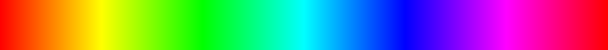
2.2. Maximal circuits in the cube edge/diagonal graph
If we expand to the edge face/diagonal graph, then we have may more six segment cycles not involving white or black:
RBCGYMRRBCMYGRRBGCMYRRBGCYMRRBGYCMRRBMCGYRRBMCYGRRBMYCGRRGBCMYRRGBCYMRRGBMCYRRGCBMYRRGYCBMRRMBGCYRRMCBGYR
2.3. Hitting all the corners
A common request is for a cycle in the face edge graph that uses every corner color of the RGB cube. Not only do we have one, but 6 uniquely different ones – not counting rearrangements or reversals:
0BCGYWMR00BCWMRYG00BMRYWCG00BMWCGYR00GCBMWYR00GYWCBMR0
2.4. Large Trees
Another common request is for trees (so no color is used twice) starting at black and ending at white. Several trees exist of lengths of 7 and 5:
0BCGYRMW0BMRYGCW0GCBMRYW0GYRMBCW0RMBCGYW0RYGCBMW0BCGYW0BMRYW0GCBMW0GYRMW0RMBCW0RYGCW
2.5. Black to White Trees
The three segment trees from black to white are useful in that the intensity (sum of the components) is a monotone increasing function from zero up to
three. One of them (0RYW) is often called the "fire ramp" as it ranges from black (flame base), up to yellow, then red, and finally to white hot.
0BCW–csCCsumBGR0BMW–csCCsumBRG0GCW–csCCsumGBR0GYW–csCCsumGRB0RMW–csCCsumRBG0RYW–csCCsumRGB&csCColdeFireRamp
2.5.1. Predefined Schemes
csCCsumBGR
csCCsumBRG
csCCsumGBR
csCCsumGRB
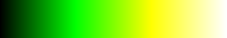csCCsumRBG
csCCsumRGB&csCColdeFireRamp
2.6. Luminance based color schemes
Luminance based color schemes defined as color gradients from the center of the in the HSL color space to an extreem vertex are quite popular. Many of the most popular luminance based color schemes in the HSL color space are also edge graphs in the RGB color cube! Of particular note, are the two segment trees from black to white in the RGB edge/diagonal graph – they are the same as the two segment graphs in the edges of the HSL hexcone from black to white!
0RW–H=000– red edge of the HSL hexcone0YW–H=060– yellow edge of the HSL hexcone0GW–H=120– green edge of the HSL hexcone0CW–H=180– cyan edge of the HSL hexcone0BW–H=240– blue edge of the HSL hexcone0MW–H=300– magenta edge of the HSL hexcone
2.7. Hot Too Cold
A very common color map used to map data with ranges from cold up to hot is known as the "cold too hot ramp". This ramp provides colors from blue, up through green, and ends in red. It suffers from the same defects as the color cube rainbow; however, its use is so common that special support is provided via a named method.
BCGYR–csCColdeColdToHot
The traditional cold to hot ramp can be improved – this is my personal opinion. This new ramp still has the same problems the color cube rainbow has; however, it is more attractive. This one moves from white (ice), up to water (blue), and then up to red (hot) via yellow.
WCBYR–csCColdeIceToWaterToHot
2.7.1. Predefined Schemes
csCColdeColdToHot
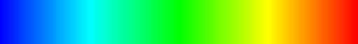csCColdeIceToWaterToHot
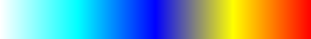
2.8. Constant Intensity Cycles
Two cycles, with three edges each, exhibiting constant intensity for every color in the color scheme are genuinely useful. They have the advantage that they always render a "bright" color. The lower intensity version is best for projected media that don't do well with yellow.
CMY–csCCconsTwo– intensity == 2BRG–csCCconsOne– intensity == 1
2.8.1. Predefined Schemes
csCCconsTwo
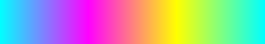csCCconsOne
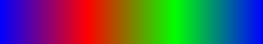
2.9. One Segment Diverging Maps
One edge trees in the face diagonal graph with a nearly constant intensity of 2 along the entire edge are useful for "diverging" or "bipolar" color schemes. By definition, such color schemes will never involve black or white.
While rarely used, the following maps are useful and suggested. None of them have the problems associated with the color cube rainbow.
YC–csCCudBrYM–csCCudBgMC–csCCudGrMY–csCCudGbCM–csCCudRgCY–csCCudRb
The naming convention for the methods is not obvious. Take, for example, setRGBcmpUpDownRampBr. This is so named because of the computational algorithm used to compute the scheme: Blue up, red down, green constant (maxChanVal).
2.9.1. Predefined Schemes
csCCudBr
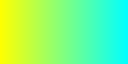csCCudBg
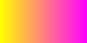csCCudGr
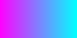csCCudGb
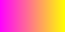csCCudRg
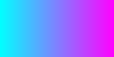csCCudRb
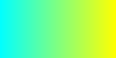
2.10. Three Segment Diverging Maps
Some three edge trees utilizing very different colors for starting and terminal points can form very nice "divergent" color maps. Such maps can successfully illustrate variables with both positive and negative values or two mutually exclusive, opposing variables. Only two are directly supported via named methods (selected for attractiveness):
BWR– intensity between 1 and 3CWM– intensity between 2 and 3
2.11. Center point ramps (HSL schemes)
Color schemes defined as gradients from the center of the HSL color space to an extreme edge are mostly perceptually linear. These are also one segment
trees in the complete cube graph with center. Recall that we call the vertex at the center of the cube "H" – for "Half way between everything". Using
this new vertex, we have the following saturation based color schemes:
HR–csHSLhRHG–csHSLhGHB–csHSLhBHC–csHSLhCHY–csHSLhYHM–csHSLhM
2.11.1. Predefined Schemes
csHSLhR
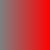csHSLhG
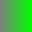csHSLhB
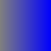csHSLhC
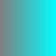csHSLhY
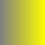csHSLhM
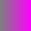
2.12. Stacked HSL Schemes
The diagonal traversals (diagonal meaning through the center of the cube) are essentially two of the HSL saturation based schemes placed back to back. Aside from the black-white one, these can form effective divergent color schemes.
CR–csCCdiagCRMG–csCCdiagMGYB–csCCdiagYB0W–csCCdiag01
2.12.1. Predefined Schemes
csCCdiagCR
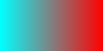csCCdiagMG
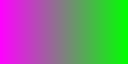csCCdiagYB
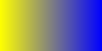csCCdiag01
3. Continuous Polynomial Schemes
These schemes are "continuous" in that they take a floating point value to select the color, and are derived from continuous polynomial curves in the RGB cube space. Many of them are very similar to color maps in popular use (with similar names), but these are only only similar to those popular maps. In particular, the maps here may not be as precise when it comes to things like monotonously of intensity. That said these look nice and I like easy to compute color maps that don't require fancy interpolating schemes.
csPLYgrey
csPLYquad
csPLYinferno
csPLYmagma
csPLYparula
csPLYplasma
csPLYturbo
csPLYviridis
csPLYcividis
csPLYhsvRB
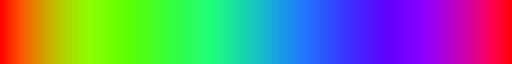
4. Dav Green's cubehelix color maps
The csCubeHelix_tpl templte can geneate any of the cubehelix schemes, but colorTpl predefines three I particularly like:
csCHstd
csCHblu
csCHvio
5. Pseudo-Greyscale
These schemes are not true greyscale, but the colors are very close to grey. These schemes are discreet!
csPGrey3x
csPGrey4x
6. Spectral
These color schemes are based on the spectrum and color match functions. These aren't really suitable for visualization, but some interesting color schemes can be derived from them.
csRainbowLA
csRainbowCMwithBUMP
csRainbowCMwithLINEAR
csRainbowCMwithFLOOR
csRainbowCMwithCEILING

csRainbowCMwithNEAREST
7. Color Brewer
csCBAccent
csCBBlues
csCBBrBG
csCBBuGn
csCBBuPu
csCBDark2
csCBGnBu
csCBGreens
csCBGreys
csCBOranges
csCBOrRd
csCBPaired
csCBPastel1
csCBPastel2

csCBPiYG
csCBPRGn
csCBPuBuGn
csCBPuBu
csCBPuOr
csCBPuRd
csCBPurples
csCBRdBu
csCBRdGy
csCBRdPu
csCBRdYlBu
csCBRdYlGn
csCBReds
csCBSet1
csCBSet2
csCBSet3
csCBSpectral
csCBYlGnBu
csCBYlGn
csCBYlOrBr
csCBYlOrRd